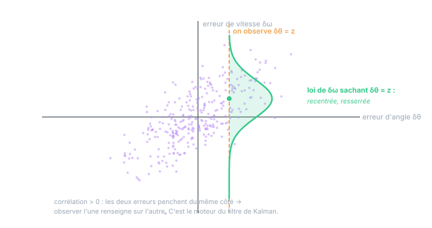

Chapitre 03
Plusieurs variables : jointe, conditionnelle, covariance
Objectifs du chapitre
- Décrire deux VA à la fois : loi jointe, lois marginales.
- Définir l'indépendance — et savoir ce qu'elle autorise (et n'autorise pas).
- Mesurer un lien : covariance et corrélation — et leurs limites.
- Comprendre la loi conditionnelle : apprendre sur une variable en observant l'autre.
1. La loi jointe : deux variables, une seule carte
Deux VA X et Y (disons : l'erreur d'angle et l'erreur de vitesse de votre filtre à un instant donné) sont décrites ensemble par leur loi jointe : la densité p(x, y) qui dit où tombent les couples de valeurs. Ce n'est pas la donnée des deux lois séparées : la jointe contient en plus toute l'information sur leur lien.
De la jointe, on retrouve chaque loi individuelle — la marginale — en « écrasant » l'autre variable (on intègre sur elle) :
Le mot vient des tableaux : la loi de X s'obtenait en sommant chaque ligne et en écrivant le total dans la marge. Marginaliser = renoncer à l'information sur l'autre variable.
2. L'indépendance : quand la carte se factorise
X et Y sont indépendantes si connaître l'une n'apprend rien sur l'autre. Mathématiquement, la jointe se factorise :
C'est une hypothèse de modélisation qu'on fait sans arrêt — « le bruit de l'inclinomètre A est indépendant de celui de l'inclinomètre B », « le bruit de mesure est indépendant du bruit de process » — et elle a des conséquences en or :
L'additivité des variances est la propriété la plus utilisée de tout ce cours : elle donnera le √N de la moyenne (chapitre 8), la marche aléatoire (chapitre 6), le +Q de la prédiction de Kalman. À chaque fois que deux sources de hasard indépendantes se cumulent, leurs variances s'ajoutent — jamais leurs écarts-types.
σ_total ≠ σ₁ + σ₂ ! Deux bruits indépendants de 3° et 4° donnent σ = √(9 + 16) = 5°, pas 7°. Les écarts-types s'ajoutent « en Pythagore » (quadratiquement) — les grandes sources dominent, les petites deviennent vite négligeables. C'est pour cela qu'améliorer le deuxième pire capteur d'une chaîne ne change presque rien.
3. Covariance et corrélation : mesurer le lien
Entre l'indépendance totale et la dépendance parfaite, il faut une mesure graduée. La covariance étend la variance au couple :
Lisez le produit : il est positif quand les deux écarts sont du même côté de leurs moyennes, négatif quand ils sont de côtés opposés. Une covariance positive dit donc : « quand X est au-dessus de sa moyenne, Y tend à l'être aussi ». Sa version normalisée, la corrélation, élimine les unités :
- ρ = ±1 : lien affine parfait (connaître l'une donne l'autre exactement) ;
- ρ = 0 : décorrélées — aucun lien linéaire ;
- indépendantes ⇒ décorrélées, mais la réciproque est fausse en général (un lien non linéaire peut donner ρ = 0)… sauf pour des gaussiennes jointes, où décorrélé = indépendant — l'une des simplifications qui rendent le monde gaussien si confortable.
4. La loi conditionnelle : observer, c'est apprendre
Voici l'opération qui fait tout le sel du chapitre — et du filtrage. On observe la valeur d'une variable : X = x. Que devient notre connaissance de Y ? Réponse : on découpe la jointe le long de la tranche X = x et on renormalise. C'est la loi conditionnelle :

Le mécanisme n'opère que par la corrélation. Si le nuage était rond (ρ = 0, cas gaussien), la tranche verticale aurait la même forme partout : observer l'angle n'apprendrait rien sur la vitesse. Plus le nuage est incliné et étiré, plus la tranche est décalée et fine — plus l'observation est informative. Voilà pourquoi le filtre de Kalman ne peut estimer une vitesse jamais mesurée que si sa matrice P porte des termes croisés angle–vitesse.
Deux remarques qui préparent la suite. D'abord, la règle de Bayes n'est que la conditionnelle écrite dans les deux sens — p(y|x)·p(x) = p(x,y) = p(x|y)·p(y) — d'où :
C'est elle qui permet de passer de « la loi de la mesure sachant l'état » (le modèle du capteur, facile à écrire) à « la loi de l'état sachant la mesure » (ce qu'on veut !). Ensuite, l'espérance conditionnelle E[Y | X = x] — le centre de la tranche — sera au chapitre 9 la meilleure estimation possible de Y après observation. Tout le filtre de Kalman est le calcul récursif de cette espérance conditionnelle.
5. Le vecteur aléatoire et la matrice de covariance
À plus de deux variables, on empile tout en vecteur aléatoire X = [X₁, …, Xₙ]ᵀ, de moyenne vectorielle μ et de matrice de covariance :
La diagonale porte les variances, le hors-diagonale les liens. Symétrique, semi-définie positive — et transportée par le « sandwich » A·Σ·Aᵀ sous toute transformation linéaire. Ces objets sont développés en détail aux chapitres 2 et 3 du cours Kalman ; ici, l'essentiel est de voir qu'ils ne sont que la covariance de ce chapitre, rangée en tableau.
Exercices
Exercice 1 — Covariance à la main
Deux erreurs prennent, de façon équiprobable, les quatre couples de valeurs (−1, −2), (−1, 0), (+1, 0), (+1, +2). Calculez les moyennes, les variances, la covariance et la corrélation.
Voir la solution
Var[X] = (1+1+1+1)/4 = 1 Var[Y] = (4+0+0+4)/4 = 2
Cov = [(−1)(−2)+(−1)(0)+(1)(0)+(1)(2)]/4 = (2+0+0+2)/4 = 1
ρ = 1 / (1·√2) ≈ 0,71
Corrélation forte et positive : les grands Y accompagnent les grands X. Si l'on observe X = +1, la loi conditionnelle de Y devient {0, +2} équiprobables : moyenne recentrée à +1 (au lieu de 0) et variance réduite à 1 (au lieu de 2) — la figure 3.1 en version calculable à la main.
Exercice 2 — Additivité, mais pas des écarts-types
Votre chaîne de mesure d'angle cumule trois bruits indépendants : capteur (σ = 0,30°), CAN (σ = 0,10°), perturbation EMI (σ = 0,08°). (a) Quel est le σ total ? (b) On blinde le câble et l'EMI disparaît : gain réel ? (c) Que vaudrait le « total » si l'on additionnait naïvement les σ ?
Voir la solution
- (a) σ = √(0,30² + 0,10² + 0,08²) = √(0,09+0,01+0,0064) ≈ 0,33°.
- (b) Sans EMI : √(0,09+0,01) ≈ 0,316° — un gain de ~0,01° : quasi rien. La source dominante (0,30°) écrase les autres : c'est elle qu'il faut attaquer.
- (c) Naïvement 0,48° — 45 % trop pessimiste. L'addition quadratique n'est pas un détail de puriste : elle change les décisions (ici, « blinder le câble » ne valait pas l'effort).
Exercice 3 — Corrélé n'est pas causal, décorrélé n'est pas indépendant
(a) Les erreurs de vos deux inclinomètres montent ensemble quand l'armoire chauffe. Sont-elles indépendantes ? Que faut-il en conclure pour la matrice R ? (b) Soit X uniforme sur {−1, 0, +1} et Y = X². Calculez Cov[X, Y] et concluez.
Voir la solution
- (a) Non : une cause commune (la température) les fait varier ensemble → covariance positive. La matrice R des deux capteurs doit porter un terme croisé ; la supposer diagonale rendrait le filtre trop confiant quand il « moyenne » les deux capteurs (il croirait moyenner deux avis indépendants alors qu'ils répètent la même erreur). C'est le cas « source commune » du chapitre 16 du cours Kalman.
- (b) E[X] = 0, E[XY] = E[X³] = (−1+0+1)/3 = 0, donc Cov = 0 : décorrélées. Pourtant Y est entièrement déterminée par X — dépendance totale, mais non linéaire, invisible à la covariance. La covariance ne voit que les liens linéaires ; seul le monde gaussien autorise le raccourci décorrélé = indépendant.
Récapitulatif
- Jointe p(x,y) : la carte des couples ; marginale : on intègre l'autre variable (on renonce à son information).
- Indépendance : p(x,y) = p(x)p(y) ⇒ Var[X+Y] = Var[X]+Var[Y] — l'additivité des variances, jamais des écarts-types (addition « en Pythagore »).
- Covariance E[(X−μ_X)(Y−μ_Y)] et corrélation ρ ∈ [−1,1] : le lien linéaire. Décorrélé ⇏ indépendant (sauf gaussiennes).
- Conditionnelle p(y|x) = p(x,y)/p(x) : découper la tranche, renormaliser — recentrée et resserrée si corrélation. Bayes la renverse : du modèle capteur p(z|x) vers ce qu'on veut p(x|z).
- À n variables : vecteur aléatoire, matrice Σ (diag = variances, hors-diag = liens), sandwich AΣAᵀ — les objets du cours Kalman.